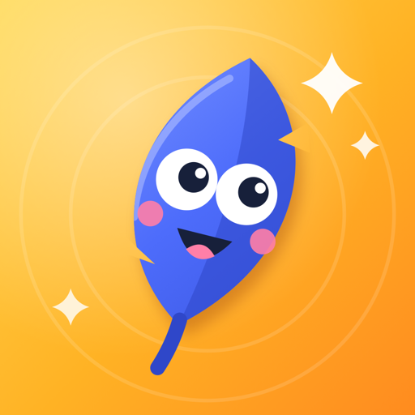

Plume
Французский письмом: путь от нуля до B1, как в Duolingo.
Откройте эту страницу в Safari на iPhone. После нажатия вернитесь на экран «Домой» — приложение появится там.
Сборка 8
Сборки
- Сборка 8 · 26 ноября, 17:40
Карточка урока больше не прячется под баннером юнита; пояснение к слову раскрывается по нажатию поверх примеров; длинные фразы переносятся и влезают в экран; звуки верного ответа, ошибки и конца урока как в Duolingo; кнопки не ломаются на две строки - Сборка 7 · 26 ноября, 11:32
Пропуски проверяются без ИИ: другое слово — сразу ошибка с подсказкой (écrire → écrirai); Gemma больше не выдаёт исправленную ошибку за правильный ответ; регистр букв нигде не считается ошибкой, в пропуске нет автозаглавной - Сборка 6 · 26 ноября, 11:19
Все 30 юнитов и тесты «перепрыгнуть» отредактированы: около 10 тысяч новых правильных вариантов ответа, исправлены неточные русские фразы и правила, убраны неверные варианты; микрофон не обрывается на паузе - Сборка 5 · 26 ноября, 11:08
Метка «Начать» на пути и прогресс юнита в баннере; проверка ответов без ИИ: больше вариантов, цифры, опечатки, типичные ошибки и кнопка «Спросить Gemma»; энергия 60; свои звуки и вибрация; микрофон ждёт 9 секунд тишины; первая часть исправленных юнитов - Сборка 4 · 26 ноября, 10:37
Новая иконка; серия дней — только после пройденного урока - Сборка 3 · 26 ноября, 10:30
Микрофон на iPhone снова работает - Сборка 2 · 26 ноября, 01:47
Отступы и широкие кнопки на iPhone - Сборка 1 · 26 ноября, 01:45
Первая сборка для iPhone: путь A1–B1, проверка Gemma на телефоне